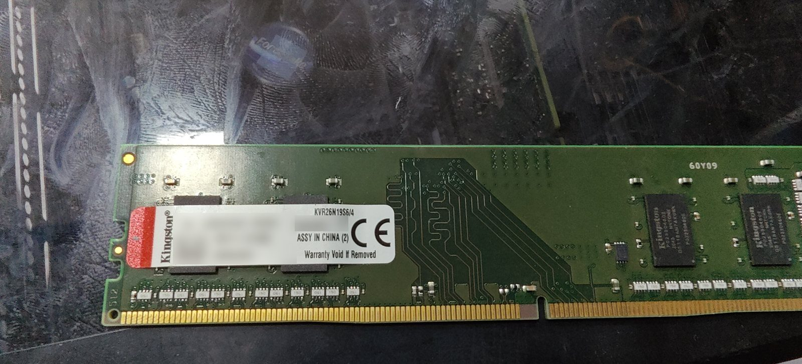

Before you budget for a full set of new computers, read this. Many "slow" office PCs do not need replacing. They need an SSD and more RAM. The upgrade costs a fraction of a new machine, and the PC feels new again. Not always, though — this guide helps you tell the two cases apart.
Sound familiar?
- Do your staff make tea while their computer starts up?
- Does it take minutes to open Tally or a large Excel file?
- Does the billing PC hang just when a customer is waiting at the counter?
- Are you about to replace every PC because "they have all become slow"?
Don't let a slow PC slow down your business. In most offices the fix is cheaper and faster than a full replacement.
Why old PCs feel slow
People blame the processor. It is rarely the processor. A processor from a few years ago can still run a browser, Excel and Tally comfortably. What is actually happening is one of two bottlenecks:
- A mechanical hard disk (HDD). It has a spinning platter and a moving arm. Every time Windows needs a file, that arm moves, and modern Windows asks for files constantly. This is why start-up takes minutes and every program opens slowly.
- 4GB of RAM. Windows 10 or 11 alone uses over 3GB. Everything else spills onto the slow disk.

Fix those two and the processor stops being the limit.
What the upgrade involves
An SSD replaces the hard disk, and RAM goes into a free memory slot. Windows is either moved across to the new drive or freshly installed, and your data is backed up first. For a single machine it usually takes less than an hour on site. For several PCs, we schedule batches so work does not stop. We quote per machine after checking the exact model.
What we check first

- Free RAM slot, or soldered memory? Most desktops and business laptops have slots. Many thin consumer laptops have memory soldered to the board, which limits the upgrade.
- Which RAM type — DDR3, DDR4 or DDR5? They are physically incompatible. The wrong stick will not fit, and a mismatched one can cause start-up failures.
- M.2 slot or 2.5" SATA bay? Older machines take a 2.5" SATA SSD; newer ones usually have an M.2 slot for a faster drive. Either is a huge step up from a hard disk.
- Is the processor supported by Windows 11? Intel 8th gen or newer, or AMD Ryzen 2000 series or newer. This decides whether the machine has a future.
When to replace instead
- The processor is not supported by Windows 11 (Intel 7th gen or older). Windows 10 support ended in October 2025, so these PCs no longer receive regular security updates. For a business that handles customer or financial data, that is a real risk. Upgrading them is money spent on a dead end.
- The hinges are cracked or the body is breaking. You would be upgrading a machine that will physically fail.
- The screen has lines or heavy backlight bleed. A screen replacement pushes the total cost too close to a replacement machine.
- RAM is soldered at 4GB. An SSD helps, but 4GB will keep holding the user back.
An upgrade done right starts with the data
The biggest risk in any upgrade is not the hardware. It is the data. Our process for every machine: back up and verify the data, move or reinstall Windows, reinstall your business software (Tally, Office, antivirus, printers, email), test, and only then hand it back. On a PC that has been slow for years, a clean Windows installation is usually the better choice.
Upgrading the right PCs and replacing only the ones that are truly at end of life can save a large share of your IT budget. Send us the model numbers of your office PCs on WhatsApp, and we will tell you which ones are worth upgrading.
Common questions
Is it worth upgrading old office computers instead of buying new?
Often, yes. A PC with a hard disk and 4GB of RAM usually becomes fast again with an SSD and 8GB of RAM, for a fraction of the cost of a new machine. It is not worth it if the processor is too old for Windows 11 or the body or screen is failing.
Will we lose data during an SSD upgrade?
Not if it is backed up first. We back up and verify your data before any upgrade, then reinstall your business software and test the machine before handing it back.
Can you upgrade several office PCs without stopping work?
Yes. We schedule upgrades in batches, after hours or one desk at a time, so the office keeps running.